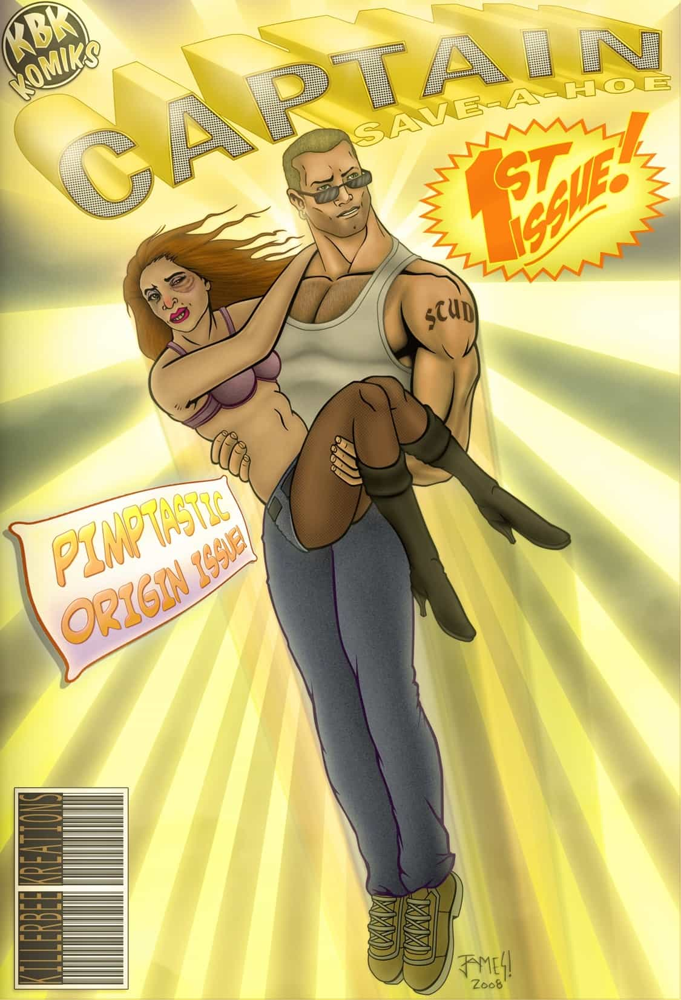

< < < Back
Cassandra Lynn’s Death Shows Why You Should Never Wife Up Broken Girls – Return Of Kings
Every so often, I run across a story that makes me facepalm so hard that I fracture the bones in my hands. The spectacular self-destruction of former Playboy Playmate Cassandra Lynn—and her Captain Save-a-Ho hubby Gary Hensley—is one of those stories.
The gist of it is that Hensley married Lynn, a past-her-prime party girl with two kids from some deadbeat who never paid a penny in child support. He supported her and her children while struggling to build his own company and pay the bills. Then one day, she took off on him and the floodgates opened:
He learned that Cassandra, 34, had been with another man the previous night. She’d consumed cocaine and alcohol and had been found dead in a bathtub.
To make matters worse, the author of the story (Ellen McCarthy of The Washington Post) spins Hensley’s tale to make Lynn into the victim. McCarthy gives absolutely no thought to the well-meaning man who is now stuck raising someone else’s kids after his loving wife ran off to cheat on him and OD on drugs.
The tale of Gary Hensley and Cassandra Lynn is illustrative on so many levels, but the most important point is this: never, ever try to rescue a broken woman. Trying to save a girl from self-destructive behavior is a fool’s errand, no matter how nice she may be to you or what other qualities she may have. Girls like Lynn are on the discount shelf for a reason: they’re damaged goods and no one with a choice wants them.
The Futility Of Being Captain Save-a-Ho

Wifing up slutty girls is a common mistake that chumps make. Most men have no clue how to attract women and spend their twenties in a sexual wasteland, taking what little they can get. When the tides start turning in their thirties—they become established in their careers while their same-aged lady peers see their looks start to fade—they retain the same desperate attitude when they were younger and loveless.
Gary Hensley was no doubt a complete chump in his younger years. He may be a talented businessman and a nice guy, but he had no idea how to deal with girls. When a former Playmate came on to him, he must have thought he was the luckiest guy in the world. Because he didn’t have any game, he was wide open to the predations of a mentally ill, narcissistic and self-immolating whore.
Men need to realize that there’s no reason for them to settle for girls like Cassandra Lynn. While not every man is going to end up with a big-titted, chaste supermodel for a wife, any man can learn game and raise his standards. There are so many girls in the sea that no man should bother with the emaciated, asphyxiated flounders who wash up on shore.
Last Rites To The Dying
Cassandra Lynn’s death by misadventure also illustrates that trying to “fix” women is a bad idea.
Many men find it tempting to try to turn girls around, whether it’s as simple as making a fat girl skinnier or in Hensley’s case, trying to make a ho into a housewife. Some girls like to do the same thing with men: many girls will fall in love with “bad boys” or other dangerous men because they want a “project” and they think they can somehow make him a better person. When girls try to “fix” men, it’s stupid; when men try to “fix” girls, it’s a tragedy.
In order to help someone, they have to want to be helped. All the advice and guidance in the world is useless so long as the girl it’s aimed at keeps slapping it away. It’s not unlike sin: in order for a person to repent, they must want to repent and seek forgiveness. You can try and convince someone that they should mend their ways, but it’s ultimately up to them to make that final step.
This was the point I was making with last week’s column on girls with mental illnesses. While it’s certainly possible for a girl with a mental disorder to turn her life around, it’s not your responsibility to make her do it. Avoiding girls who are not right in the head isn’t simply for your own safety, it’s the only way that they can possibly be helped. It’s not until a girl makes the choice to divert from her self-destructive path that she’s worth anything, and the majority of them will never pull it off.
Cassandra Lynn is a prime example of this. In trying to make her into a virtuous woman, Gary Hensley no doubt thought he was doing something great. But girls like Lynn are missing something inside them: the crucial ingredient for happy, healthy humanity. In trying to rescue a ho from her wanton ways, he’s condemned himself to both heartbreak and the hell of having to raise another man’s children.
Don’t ever waste your time on women like Cassandra Lynn. They can’t be helped. Trying to save girls like them is like trying to rescue the eggs that fall from the nest and never become birds.
Read More: 5 Reasons Why Girls With Tattoos And Piercings Are Broken